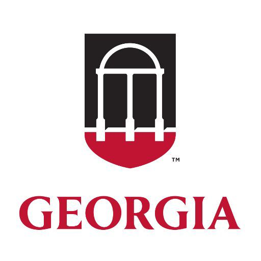

Hi! My name is Rebecca Barshay and I am currently a freshman at the University of Georgia. I have loved being a Dawg this year and am so thankful for all of the opportunities UGA provides to their students. Many of the clubs and committees at UGA require a resume during their application process. I have been able to utilize the resume I built earlier this semester, however, its boring black and white, Times New Roman text is hardly appealing to the eye. I decided to use the Web Page Project as a chance to enhance and bring my resume to life through photos, different font style and colors and other elements. I hope you enjoy it too!

Proficient in Microsoft Word, Excel, PowerPoint, Publisher, Google Docs, Prezi, Social Media (Facebook, Twitter, Instagram)
A lot of employers and study abroad administrations also like to know what classes I am currently taking this semester so they can get a better idea about how I am doing in my progress towards applying to Terry and completing my core classes. Below, I have included a table that lays out my weekly schedule for the spring semester of 2018.
| Class of the Day | Monday | Tuesday | Wednesday | Thursday | Friday |
|---|---|---|---|---|---|
| 1 | Computer Science Lab (10:10-12:05) | Ecology (11:00-12:15) | African Drummng (12:20-1:10) | Ecology (11:00-12:15) | African Drumming (12:20-1:10) |
| 2 | African Drumming (12:20-1:10) | Physical Geography (12:30-1:45) | Computer Science (1:25-2:15) | Physical Geography (12:30-1:45) | |
| 3 | Computer Science (1:25-2:15) | ||||
| 4 | Ecology Lab (2:30-4:25) |